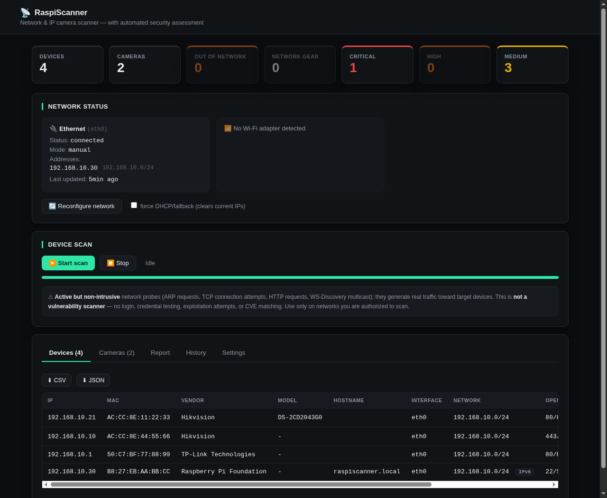

The network scanner for people who install video surveillance.
Plug a Raspberry Pi into the network. It configures itself, finds IP cameras, NVRs, DVRs and network gear, and hands you a report of what is exposed: open Telnet, reachable RTSP, admin panels without HTTPS.
- Works offline
- No telemetry
- Linux, Raspberry Pi and Windows
- Web dashboard and command line
- About 11 seconds for a /24 with 4 devices on a Pi 3B+

Example data: a Hikvision camera and NVR, a TP-Link router and a Raspberry Pi. Not anyone's real network.
How it works
You don't need to know the network in advance.
Built for the installation you didn't set up: unknown subnet, no documentation, one free port on the switch.
Plug in
Ethernet, Wi-Fi or an active VPN. It tries DHCP; if nothing answers, it tries the most common private subnets and keeps the one where it finds devices. If it finds more than one, it doesn't guess: it asks you.
Scan
For each device: TCP ports and HTTP banners, ONVIF for the real make and model, mDNS, vendor from the MAC with an offline database, reverse DNS, plus LLDP/CDP, SNMP and IPv6 when available.
Read the report
Devices grouped by category, issues found and a risk summary from critical to low. From the dashboard, as CSV or JSON, or from the terminal with --report.
Classification
It can tell a camera from an NVR.
Every device goes through four independent classifiers, and the most specific one wins.
- Camera
- NVR / DVR
- Router
- Switch
- Access point
- Raspberry Pi and IoT
- Windows PC
- Mac
- Phone and tablet
- Network printer
- Generic
Cameras and recorders are recognized by the protocols they speak, not by the brand in the MAC address.
The report
What is exposed, in plain words.
Active but non-intrusive probes: a normal connection, like anyone on the same network could make.
- CriticalTelnet open on a camera or NVRThe favorite port of IoT botnets. High on other devices.
- HighAdmin panel over HTTP onlyNo encrypted alternative: the password travels in clear text.
- MediumRTSP reachableThe video stream port answers. Credentials are not tested.
$ sudo python3 raspi-scanner.py --report NETWORK ASSESSMENT ──────────────────────────── Network: 192.168.10.0/24 4 devices discovered Summary: 1 camera, 1 NVR/DVR, 1 network device, 5 security findings SECURITY ⚠ Telnet exposed 192.168.10.10 (Hikvision NVR) ⚠ HTTP service detected, no HTTPS available 192.168.10.1 (TP-Link network device) ⚠ RTSP exposed (stream reachability not verified) 192.168.10.10 (Hikvision NVR) RISK SUMMARY Critical: 1 High: 0 Medium: 3 Low: 1
Stated limits
What it doesn't do.
Better to know before than to find out on site.
Not a vulnerability scanner
No logins, no password guessing, no exploits, no CVE matching. It says what a service exposes, not whether it's actually exploitable.
No MAC beyond the router
ARP doesn't cross routers. Networks reached through routing or VPN are still scanned, but without MAC or vendor.
No multi-hop maps
Topology goes one hop: the gateway and the neighbors announced via LLDP/CDP.
Sends data to no one
No telemetry and no cloud service. Everything it needs, including the TLS certificate, stays on the device.
Installation
Try it in two minutes, install it when you need to.
The trial installs nothing and doesn't touch the network configuration. The installation turns a Raspberry Pi into a dedicated appliance to leave on site.
1Get the code
git clone https://github.com/Scorp1oner0/raspiscanner.git cd raspiscanner
Without git, or on Windows:
Download the zip2Start it
3First login
On first launch an admin user is created with a random password, which you change right away. With the quick trial the password shows up in the terminal window; with the installation you'll find it in the log:
sudo journalctl -u raspiscanner -n 20 --no-pager
The browser will flag the certificate as untrusted: that's normal for a device reached by IP on a private network, just like routers and NAS boxes.
To also find devices that expose no port at all you need the full ARP scan: on Linux start the trial with sudo -E RASPISCANNER_NO_NETWORK_CONFIG=1 ./start.sh, which still leaves the network untouched; on Windows install Npcap and run start.bat as administrator.
Requirements
- Linux, including Raspberry Pi OS, or Windows
- Python 3.9 or later
- On Linux:
python3-venv, plusisc-dhcp-clientfor the installation - Root only for the installation and the full ARP scan
- Optional:
nmclifor Wi-Fi and hotspot, Npcap on Windows
Only use it on networks you're authorized to scan. The probes are light but real: they send packets and generate traffic visible on the target network.